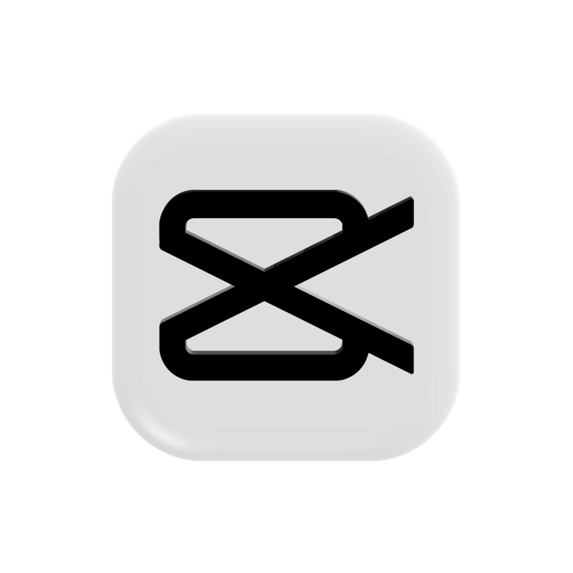

Semyon Vorster
Digital Management & Content Creation
Building digital experiences, analyzing growth, and exploring the intersection of technology and media.
Get in TouchAbout Me
I am a forward-thinking high school student passionate about the synergy between IT, Artificial Intelligence (AI), and digital management**. I thrive on optimizing processes, learning modern tools, and discovering how automation can solve real-world productivity challenges.
With a strong foundation in digital content and analytics, my current focus is expanding my technical skill set, mastering English to a professional level, and preparing to build next-generation tech projects.
Experience & Projects
 Main Case
Main Case
YouTube Channel "Seme4ny"
30,000+ Subscribers
Concepted, produced, and independently scaled a digital brand. Reached over 30k subscribers by analyzing trends and understanding audience preferences.

SkillsShort-Form Video Production
CapCut Specialist
Advanced experience in editing engaging short-form content (YouTube Shorts, cinematic edits). Specialized in dynamic pacing, visual effects, and audio synchronization to maximize viewer retention.
Future AI Project
An upcoming concept focusing on AI-driven automation and productivity.
Let's Connect
I'm always open to interesting discussions, collaborations, and tech initiatives.